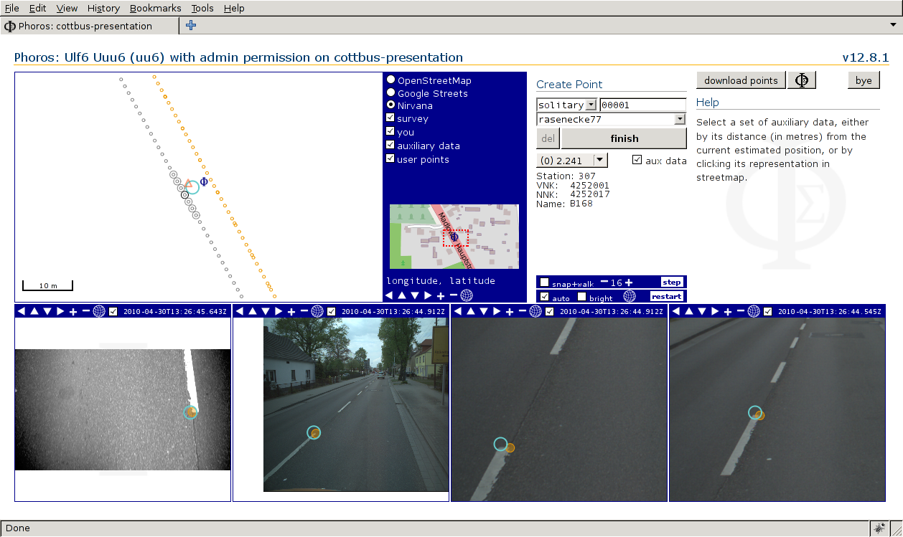

Phoros
Table of Contents

A Tool for Photogrammetric Road Survey
Workflow
- Images and GPS data are acquired using a measuring vehicle.
(Here
is a working example.)
Sequences of a few hundred images together with their trigger times are stored Huffman-encoded in files called
*.pictures. GPS data is preprocessed into a table of ASCII text. The format of both image and GPS files is not (yet) explained here. - Cameras and GPS system need to be calibrated, which is not explained here.
- Calibration parameters are stored into the database using the
Command Line Interface (There, cf.
Camera Hardware ParametersthroughCamera Calibration Parameters.) - GPS data and image information are fed into the database using
option
--store-images-and-pointsof the Command Line Interface. - Presentation project users use the web interface to point in a map at a point of interest and are shown a couple of relevant images. In these images they point at features of interest the coordinates of which can be stored into the database. (Storage not yet implemented; coordinates are just shown.)
Command Line Interface
The command line interface is used to
- initialize a fresh PostgreSQL database
(
./phoros --create-sys-tables ...), - set up and manage acquisition projects
(
./phoros --create-acquisition-project ...), - store camera calibration parameters (
--store-camera-hardware,--store-device-stage-of-life,--store-camera-calibrationetc.), - store measurement data, i.e., images and GPS positions
(
./phoros --store-images-and-points ...), - manage presentation projects and presentation project users
(
--create-presentation-project,--create-useretc.), - start Phoros as a presentation server (a web server presenting
measurement data to presentation project users) by
./phoros --server ....
$ ./phoros --help
emits a rather comprehensive help message.
Web Interface
Once images, calibration data and definitions of users and projects have been stored using the Command Line Interface, Phoros can be started as a web server:
$ ./phoros --server \ > --common-root=/some_path/where_i_put/my_raw_images/ \ > --host=my_server --port=5432 --database=my_projects \ > --user=database_admin --password=SeCrEt
A user can than point their browser at Phoros's URL. Example:
http://localhost:8080/phoros/beautiful-cities connects to
presentation project beautiful-cities (and asks for username and
password).
Choose a point from the map
In the map, small yellow circles represent points of view of the available images. Pointing into an area of interest has Phoros select and display a few1 images containing the point clicked, which on the streetmap is represented by the dark blue Phoros logo.

Point into first image
After zooming into a first image and selecting a feature of interest, epipolar lines appear in the other images which may be helpful in recognising the selected feature there.
Points selected in images are represented by large yellow circles.
Point into second image
Zooming in and selecting the same feature in a second image triggers calculation of the estimated global position. The estimated position is now shown as a cyan circle in all images and in the map. Neither estimated position accuracy nor pointing precision are bounded by pixel size.
Improve accuracy
Zooming in and pointing at the feature in some (or all) of the remaining images improves accuracy.
Store point
Finishing this point means storing it in a dedicated user point table.
Deployment
Download
- Browse Phoros source code via gitweb at Github.
- Browse source code of Steffen Scheller's PhoML library, which is needed by Phoros.
- Get everything:
$ git clone git://github.com:trebb/phoros.git $ # or: git clone https://github.com/trebb/phoros.git $ cd phoros $ git submodule init $ git submodule update
The build process isn't perfect yet. You'll (probably) need an x86-64 Debian system with Quicklisp installed on top of SBCL.
Debian Installation Walk-Through
- Install Debian; choose standard system tools and (probably) SSH server.
- Install Debian packages ed, emacs, fonts-sil-gentium, g++, git, icoutils, imagemagick, proj-bin, sbcl, sbcl-source, slime, swig.
- Install (as a non-root user) quicklisp:
$ wget https://beta.quicklisp.org/quicklisp.lisp $ sbcl --load quicklisp.lisp
In SBCL, type
(quicklisp-quickstart:install) (ql:add-to-init-file) (quit)
- Build and install Phoros:
$ git clone ... #(see above) $ cd phoros $ git submodule init $ git submodule update $ make bin-tarball $ mkdir ~/phoros-workspace $ cp ~/phoros/phoros_VERSION_x86_64.tar.gz ~/phoros-workspace/ $ cd ~/phoros-workspace $ tar -xzf phoros_VERSION_x86_64.tar.gz $ ln -s phoros_VERSION_x86_64 phoros $ cd ~/phoros-workspace/phoros $ ./phoros --check-dependencies $ ./phoros --check-db --host=DB_HOST --user=DB_USER --password=SECRET --database=PHOROS_WORKSPACE_DB --aux-host=DB_HOST --aux-user=DB_USER --aux-password=SECRET --aux-database=PHOROS_WORKSPACE_DB $ ./phoros --create-sys-tables --host=DB_HOST --user=DB_USER --password=SECRET --database=PHOROS_WORKSPACE_DB
- Peruse the example scripts and the help message to learn about Phoros administration.
- Building fasttrack:
Install Debian package libmagickwand-dev
$ cd ~/quicklisp/local-projects $ git clone git://github.com/TBRSS/lisp-magick-wand
In lisp-magick-wand/base.lisp change
(:unix (:or "libMagickWand.so" "libWand.so.9" "libWand.so"))
into
(:unix (:or "libMagickWand-6.Q16.so" "libMagickWand.so" "libWand.so.9" "libWand.so"))
$ make fasttrack
- For use with firefox from fasttrack, set in about:config browser.link.opennewwindow.override.external to 1.
Licence
PHOROS – Photogrammetric Road Survey
Copyright (C) 2010, 2011, 2012, 2015, 2016 Bert Burgemeister
This program is free software; you can redistribute it and/or modify it under the terms of the GNU General Public License as published by the Free Software Foundation; either version 2 of the License, or (at your option) any later version.
This program is distributed in the hope that it will be useful, but WITHOUT ANY WARRANTY; without even the implied warranty of MERCHANTABILITY or FITNESS FOR A PARTICULAR PURPOSE. See the GNU General Public License for more details.
You should have received a copy of the GNU General Public License along with this program; if not, write to the Free Software Foundation, Inc., 51 Franklin Street, Fifth Floor, Boston, MA 02110-1301 USA.
Acknowledgements
- Phoros is implemented using Steel Bank Common Lisp, a Common Lisp implementation.
- Communication with PostgreSQL is provided by Postmodern.
- The presentation server is based on Hunchentoot.
- Almost everything visible in the web browser looks as it does thanks to the OpenLayers library, interfaced by Parenscript and CL-JSON.
- Without Steffen Scheller's photogrammetric library PhoML Phoros's presentation server couldn't do much beyond displaying geolocated images.
- Once decoded, images are turned into something a web browser can handle by ZPNG.
- Leap second information is taken from the Earth Orientation Center.
- OpenStreetMap provides the map. (Other map services can be used as well, though.)
Footnotes:
The number of images can be specified
during server start. Example: phoros --server --images=N ...